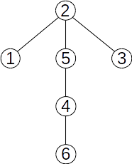
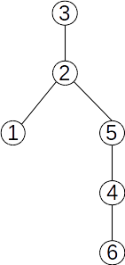

Arborii cu rădăcină
Pentru un arbore se poate stabili un nod special, numit rădăcină.
Putem spune că “agățăm” arborele în rădăcină, iar restul nodurilor cad.



Fie un arbore cu rădăcina r și x un nod în acest arbore. Atunci:
- se numește ascendent al lui x orice nod y, diferit de x, aflat pe lanțul de la rădăcină la x
- rădăcina nu are ascendenți
- rădăcina este ascendent pentru toate nodurile din arbore
- dacă y este ascendent al lui x și există muchia (y,x), atunci y se numește ascendent direct al lui x sau tatăl lui x
- rădăcina este singurul nod din arbore care nu are tată
- un nod y este descendent al nodului x, diferit de y, dacă x aparține lanțului de la r la y
- dacă în plus există muchia (x,y), atunci y este descendent direct sau fiu al lui x
- un nod care nu are niciun descendent se numește frunză
- două noduri care au același tată se numesc frați
- lungimea unui lanț de la rădăcina arborelui la un nod x reprezintă nivelul sau adâncimea nodului x
- lungimea maximă a unui lanț de la rădăcină la un nod al arborelui reprezintă înălțimea arborelui
- un nod al arborelui împreună cu toți descendenții săi formează un subarbore